A SAGA CREPÚSCULO
LIVROS
A saga "Crepúsculo" é uma série de livros escrita por Stephenie Meyer que se tornou extremamente popular, especialmente entre os jovens leitores. A série é composta por quatro livros principais e um spin-off. Aqui está um resumo da trama geral:
1. "Crepúsculo" (2005):
A história começa com a adolescente Bella Swan se mudando para a pequena cidade de Forks, Washington, para morar com seu pai. Ela conhece Edward Cullen, um misterioso e atraente colega de escola, que se revela um vampiro. Apesar dos perigos envolvidos em seu relacionamento, eles se apaixonam. A trama envolve os desafios do relacionamento deles e a ameaça de outros vampiros hostis.
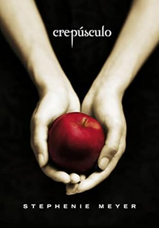
2. "Lua Nova" (2006):
Depois de um incidente perigoso, Edward decide deixar Bella para protegê-la. Bella fica devastada, mas faz amizade com Jacob Black, que mais tarde revela ser um lobisomem. A trama gira em torno do desenvolvimento do relacionamento entre Bella e Jacob e da ameaça de vampiros vingativos.
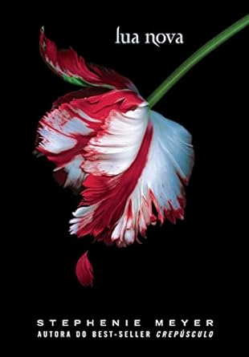
3. "Eclipse" (2007):
Bella está dividida entre seu amor por Edward e sua forte amizade com Jacob. Enquanto isso, uma ameaça vampírica mais séria se aproxima, forçando os vampiros e lobisomens a trabalharem juntos para proteger Bella e a cidade de Forks.
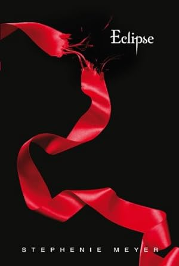
4. "Amanhecer" (2008):
Bella e Edward se casam e têm uma filha chamada Renesmee, que é meio humana e meio vampira. A trama se concentra em proteger a criança de uma conspiração dos Volturi, o clã de vampiros que governa os outros, que considera a criança uma ameaça à existência dos vampiros.
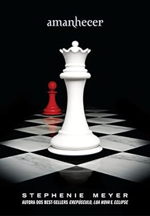
4. "Sol da meia-noite"(2020):
É uma revisitação dos eventos de "Crepúsculo" sob a perspectiva de Edward Cullen, o vampiro que é o interesse amoroso de Bella Swan. O livro oferece uma visão aprofundada dos pensamentos, sentimentos e desafios de Edward enquanto ele enfrenta o dilema de sua atração por Bella, bem como sua luta para resistir à sede de sangue humano.
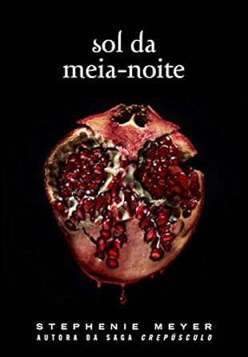
Além dos quatro livros principais, Stephenie Meyer escreveu um spin-off chamado "A Breve Segunda Vida de Bree Tanner" (2010), que explora a história de uma vampira recém-criada, Bree Tanner, durante os eventos de "Eclipse".
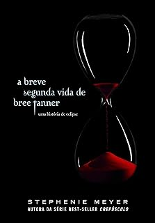
A saga "Crepúsculo" combina elementos de romance, fantasia e drama, com ênfase no relacionamento entre Bella e Edward, além de explorar o mundo dos vampiros e lobisomens. A série também foi adaptada para uma popular série de filmes.
FILMES
A saga "Crepúsculo" de Stephenie Meyer foi adaptada para uma série de filmes que ganharam grande popularidade. Aqui está um resumo dos filmes da saga "Crepúsculo" e uma breve explicação sobre cada um deles:
1. "Crepúsculo" (2008):
O primeiro filme da série segue a história de Bella Swan, uma adolescente que se muda para Forks, Washington, e se apaixona por Edward Cullen, um vampiro. Eles enfrentam desafios para manter seu relacionamento, incluindo ameaças de outros vampiros. O filme explora a jornada de Bella enquanto ela se envolve no mundo dos vampiros e se apaixona por Edward.
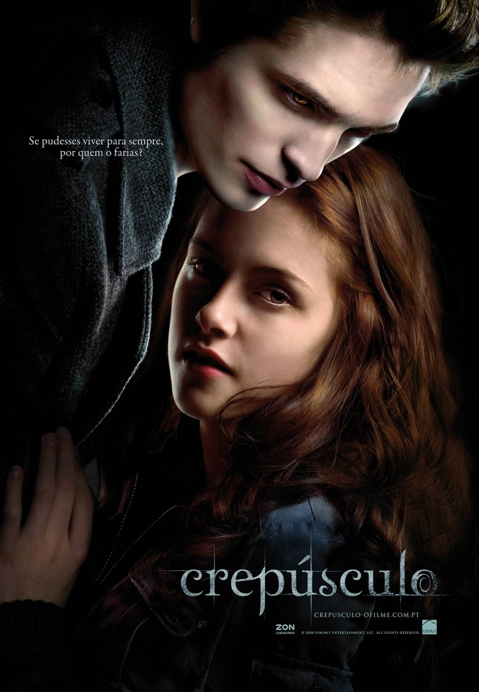
2. "Lua Nova" (2009):
Neste filme, após um incidente perigoso, Edward decide deixar Bella para protegê-la, deixando-a devastada. Ela se aproxima de Jacob Black, que se revela um lobisomem. O filme explora o desenvolvimento do relacionamento de Bella com Jacob e sua luta para superar a ausência de Edward.
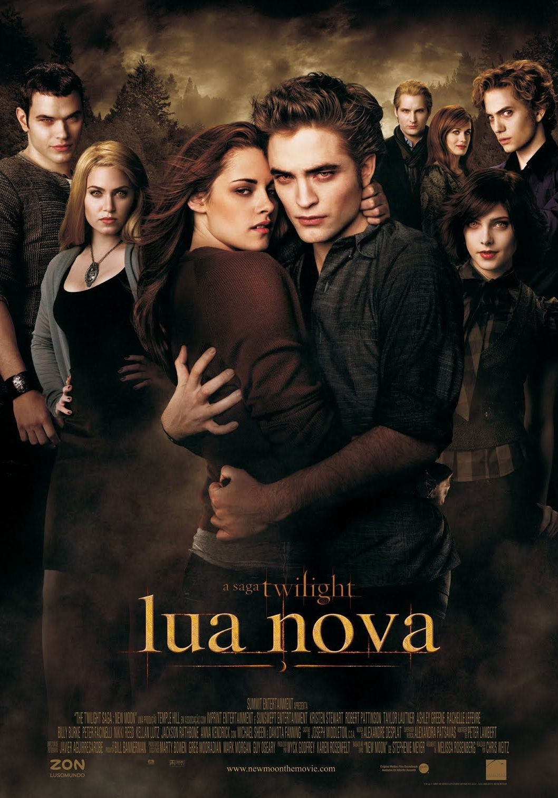
3. "Eclipse" (2010):
Bella se encontra mais uma vez no meio de um conflito entre vampiros e lobisomens, enquanto uma ameaça vampírica mais séria se aproxima. O filme se concentra em proteger Bella e na complexa dinâmica entre os personagens, à medida que eles se unem para enfrentar o perigo eminente.
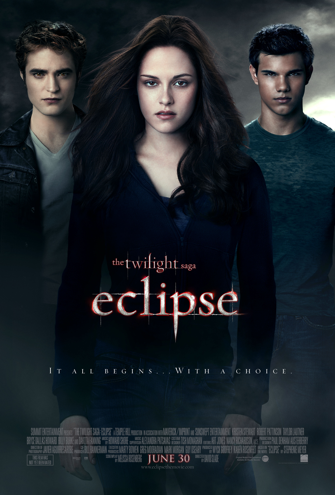
4. "Amanhecer - Parte 1" (2011):
Explora os desafios enfrentados por Bella e a tensão crescente entre os Cullen e os Volturi. O filme termina com Bella dando à luz uma filha, Renesmee, antes de sucumbir temporariamente a suas feridas e ser transformada em vampira para salvar sua vida. O filme deixa o público ansioso para a "Amanhecer - Parte 2", que traz a resolução final da história.
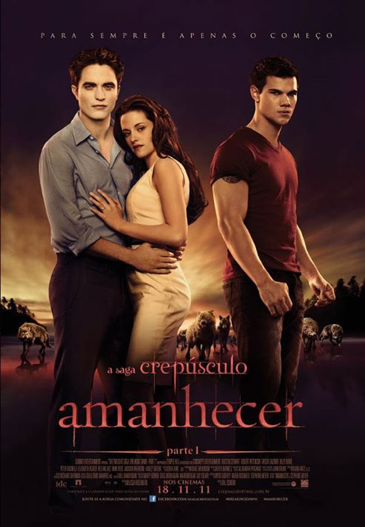
4. "Amanhecer - Parte 2" (2012):
Conclui a história de Bella e Edward, bem como a saga "Crepúsculo", com um final que traz reconciliação e paz, enquanto os personagens seguem com suas vidas. O filme é conhecido por sua ação, reviravoltas emocionantes e desfecho satisfatório para os fãs da série.
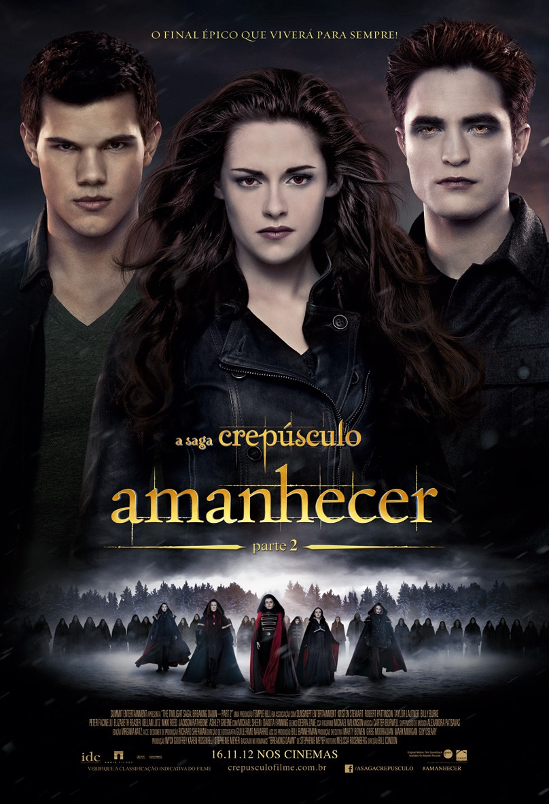
Os filmes "Crepúsculo" são conhecidos por sua ênfase nos relacionamentos, especialmente o romance entre Bella e Edward, e também por explorar o mundo dos vampiros e lobisomens. Eles foram estrelados por Kristen Stewart como Bella Swan, Robert Pattinson como Edward Cullen e Taylor Lautner como Jacob Black. A série de filmes manteve a atmosfera romântica e fantástica da série de livros e conquistou uma grande base de fãs em todo o mundo.